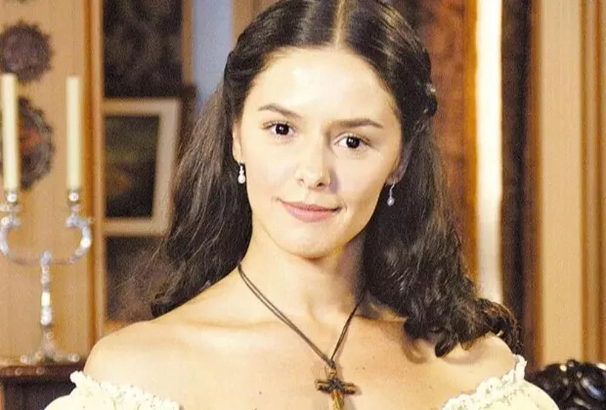

Isaura dos Anjos Sales é a protagonista principal de duas versões de A Escrava Isaura, exibidas nas telenovelas da Rede Globo e RecordTV. Ela era uma mulher branca que foi forçada a trabalhar como escrava na fazenda Almeida e a ter relações sexuais com Leôncio. Na versão de 1976, foi interpretada pela atriz brasileira Lucélia Santos. Na versão de 2004, por Bianca Rinaldi. A personagem é conhecida por sua beleza e virtude, e sua história é marcada pela luta pela liberdade e pelo amor.